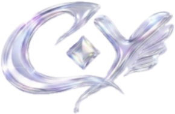

Cloud Soft
가방 속에서 엉키던 선을 구름처럼 부드럽게 감싸 매일의 번거로움을 줄입니다.

About CORD:Y
CORD:Y는 줄 이어폰을 꺼낼 때마다 반복되는 엉킴을 줄이고, 키링처럼 보여도 예쁜 기능성 줄감개를 만듭니다.
가방 속에서 엉키던 선을 구름처럼 부드럽게 감싸 매일의 번거로움을 줄입니다.
투명한 날개와 메탈 파츠가 이어폰 정리를 반짝이는 액세서리처럼 바꿔줍니다.
키링, 가방 장식, 파우치 포인트로 가볍게 달아 어디서든 꺼내 쓰기 쉽습니다.
Brand Story
CORD:Y는 케이블 정리 기능과 자기표현의 감성을 함께 담은 패션형 테크 액세서리입니다. 폰꾸미기, 가방꾸미기, 키링 소비에 익숙한 세대가 일상에서 자연스럽게 사용할 수 있도록 실용성과 디자인을 같은 비중으로 설계했습니다.
선이 감기는 순간까지 포근한 날개처럼.
투명하고 맑은 광택으로 가방 위에서 빛나게.
작은 메탈 포인트가 키링 감성을 더합니다.
등교, 카페, 이동 중에도 나다운 정리 습관.